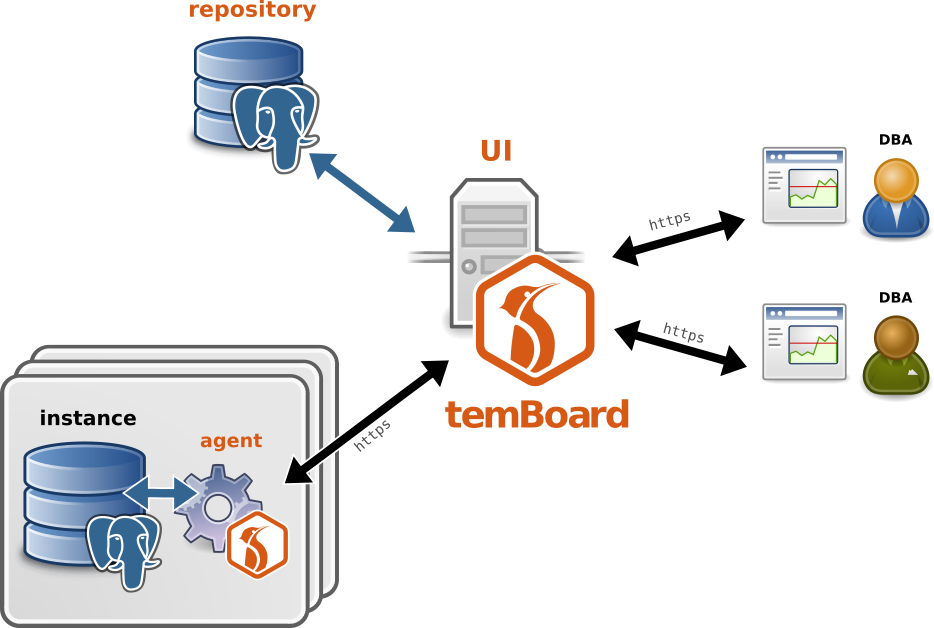
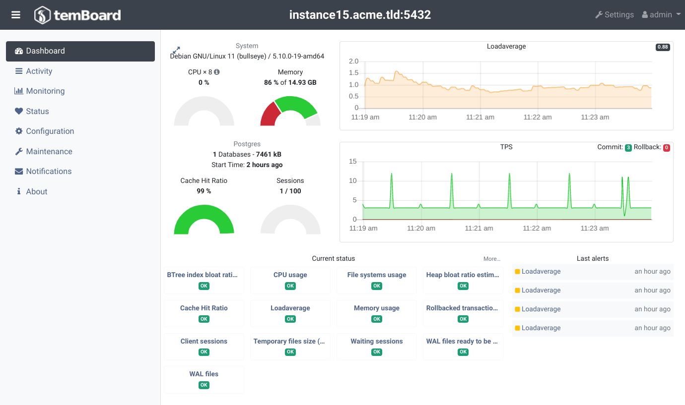
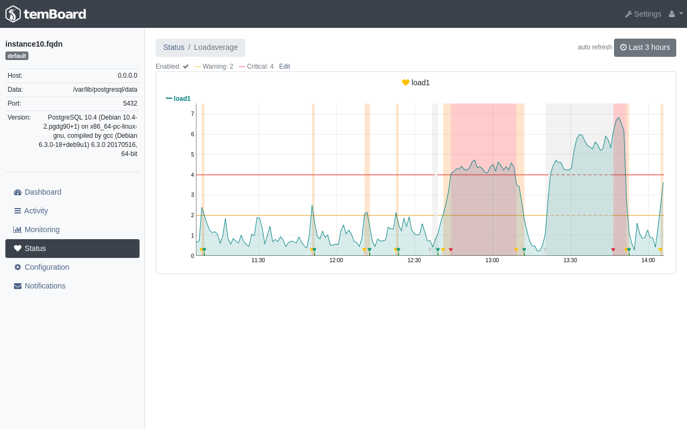
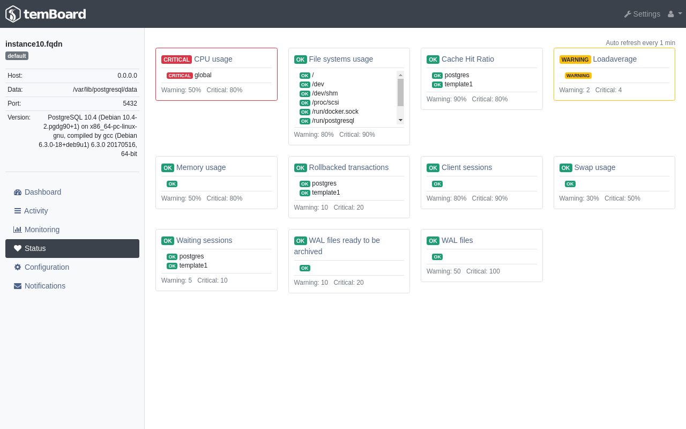

Bienvenue dans temBoard et non TeamBoard
La solution ultime de gestion et de monitoring pour PostgreSQL créé par DALIBO.
Fonctionnalités Clés
Surveillance en temps réel
Gardez un œil sur la performance de votre base de données.
Gestion des alertes
Soyez notifié immédiatement en cas de problèmes.
Gestion des performances
Identifiez et résolvez les goulots d'étranglement rapidement.
Avantages pour les Ops
Insights précieux sur la performance et la santé des serveurs de bases de données.
À Prendre en Compte
temBoard n'est pas adapté pour les instances PostgreSQL dockerisées.
Conclusion
Questions ? Suggestions ?